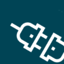

Connection
Authorize Nektar to connect to your Salesforce org via OAuth and manage the integration user credentials.

Connecting to Salesforce
The Salesforce account you sign into while creating your Nektar organization automatically becomes your connected integration user.
You may connect a different integration user in the Connection section of Salesforce integration settings:
- If another integration user is already connected, click Disconnect and then Confirm.
- If you have access to the integration user's Salesforce credentials, click Connect and then Confirm. Sign into Salesforce as the integration user (if required), and allow access (if prompted). This connects the new integration user.
Note: If you are signed in as a different Salesforce user, you should sign out of Salesforce before clicking Connect. - If you do not have the integration user's Salesforce credentials, send the link below the Connect button to the person who does. They should click this link, sign in as the integration user, and allow access. Once they complete this, you can refresh the page to verify that the new integration user has been connected.
OAuth scopes
Note
This is under-the-hood technical detail that's not necessary for using Nektar.
Scopes control what actions Nektar may take on behalf of the integration user. Nektar requires the following scopes to operate correctly.
| Scope | Purpose |
|---|---|
full |
Read and write Salesforce data and metadata |
refresh_token |
Operate as a background service |